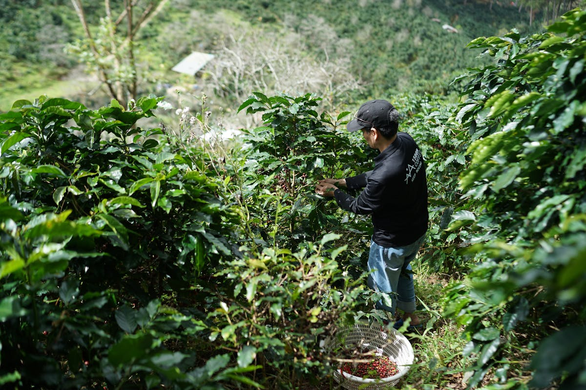
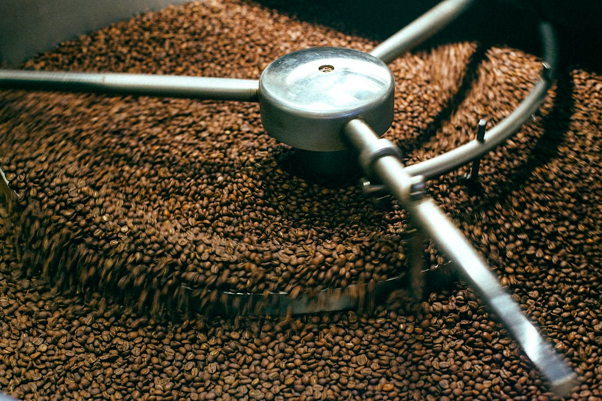
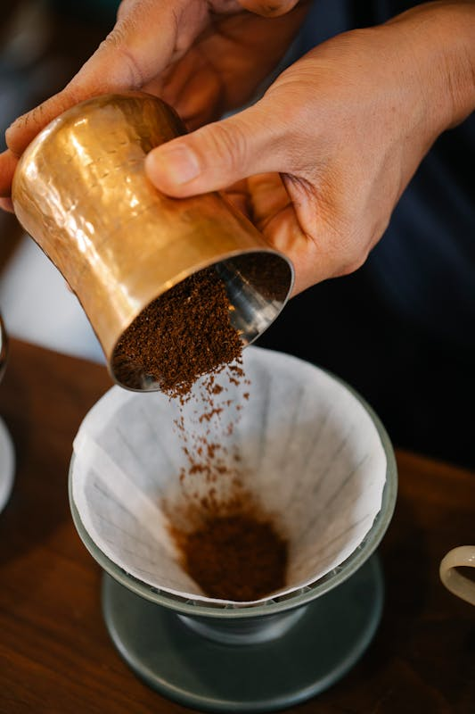

CONCEPT
こだわり
豆に、正直に。

産地との対話
WP COFFEEの豆選びは、農園への訪問から始まります。現地の土壌、気候、農家の哲学——そのすべてを理解した上で、年間を通じて仕入れる豆を決定します。数字だけで判断せず、五感で確かめることが私たちのこだわりです。

少量焙煎の誠実さ
焙煎は毎日少量ずつ、豆の状態に合わせて温度と時間を調整しながら行います。大量生産では決して出せない、豆本来のポテンシャルを引き出すために。焙煎士が一バッチごとに向き合い、納得のいく一焼きだけをお届けします。

一杯への集中
抽出は、豆・水・温度・時間のバランスで決まります。バリスタは毎朝グラインドの粒度と湯温を確認し、その日の豆のコンディションに合わせて微調整します。お客様に届く一杯は、その日その時だけのものです。
OUR VALUES
私たちの3つの想い
-
01
透明性
豆の産地・農家・精製方法をすべて公開します。何が入っているかを知って飲む、それがスペシャルティコーヒーの醍醐味です。
-
02
持続可能性
適正価格での直接取引を基本とし、農家の生活を守る取り組みを続けます。良いコーヒーは、豊かな農園から生まれます。
-
03
静かな体験
喧騒を離れ、一杯と向き合う時間を。店内の設計も、音楽も、すべて「静けさ」を中心に考えています。
ORIGINS
取り扱い産地
| 産地 | 精製方法 | 風味の特徴 | おすすめの飲み方 |
|---|---|---|---|
| エチオピア イルガチェフェ | ナチュラル | ブルーベリー、ジャスミン、ワインのような複雑さ | ハンドドリップ・エスプレッソ |
| コロンビア ウイラ | ウォッシュド | ブラウンシュガー、オレンジ、やわらかな酸味 | ラテ・カプチーノ |
| グアテマラ アンティグア | ハニー | キャラメル、ピーチ、なめらかなボディ | ドリップ・フレンチプレス |
| ケニア キリニャガ | ウォッシュド | カシス、グレープフルーツ、鮮明な酸味 | ハンドドリップ |